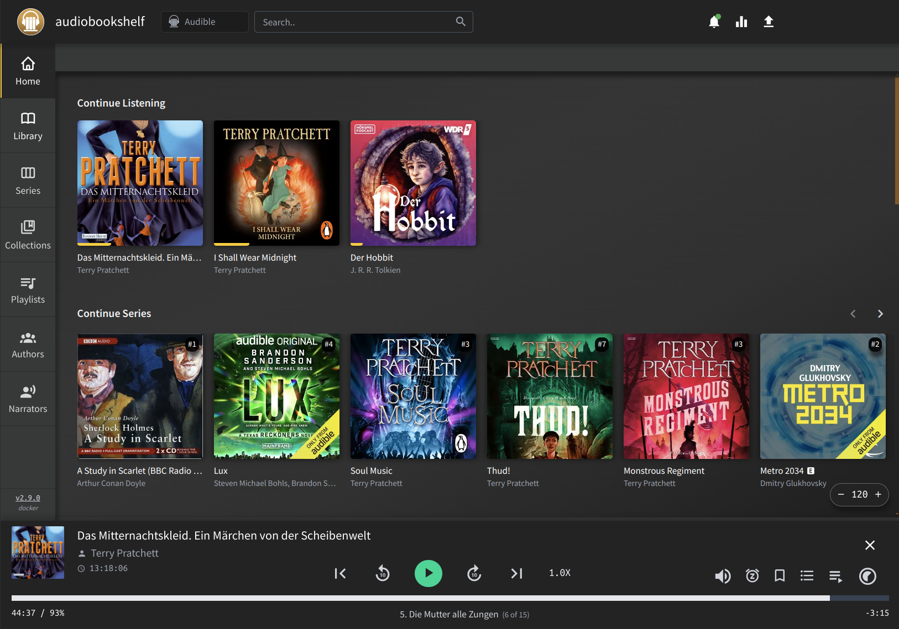

Installing Utau on Ubuntu Studio 22.04
The young artist wanted to try Utau, which as of May 24 was on version v0.4.19のインストーラー修正版.
The young artist wanted to try Utau, which as of May 24 was on version v0.4.19のインストーラー修正版.
After weeks of using Audiobookshelf to listen to audiobooks daily, it dawned on me that the PDF reader was probably not the best I could be using.
Then is also dawned on me that Audible is not my only source of eBooks; I have a few from HumbleBundle deals and a few indipendent authors who sell PDF files directly, as well as a small collection of appliance manuals and electronics datasheets. All these files have been scattered all over the place, never having a common home where they could all be conveniently navigated and read.
Until now. Enter... Komga.
Keep track of expenses and stuff is hard, thankless work.
Over the years I've done it, with varying degrees of success, using a variety of solutions including my first ever LAMP project, right after learning PHP and MySQL, and once my bank's own built-in solutions until they unceremonously took it away with no notice.
After this last disappointment, I decided to go the self-hosted way taking inspiration from the list of Money, Budgeting & Management solutions by Awesome-Selfhosted. Based on comments in several forums, I decided to first try with Firefly III.
For a bit more than a year, I've been running self-hosted services on a single-node Kubernetes cluster on Ubuntu server and, while it has presented some troubles to shoot, I have grown used to the advantages of deploying services far more easily, without having to worry too much about their dependencies, getting automatic updates, and even making many of them available over HTTPS with good SSL certificates. Now I want to enjoy some of those advantages in my desktop PC: Rapture.
The regular user is unable to connect to the Kubernetes API server because the x509 certificate expired on 2024-03-21T21:37:37Z (nearly 24 hours ago):
$ kubectl get all -n minecraft-server
E0322 20:57:59.141510 3545623 memcache.go:265] couldn't get current server API group list: Get "https://10.0.0.6:6443/api?timeout=32s": tls: failed to verify certificate: x509: certificate has expired or is not yet valid: current time 2024-03-22T20:57:59+01:00 is after 2024-03-21T21:37:37Z
E0322 20:57:59.143467 3545623 memcache.go:265] couldn't get current server API group list: Get "https://10.0.0.6:6443/api?timeout=32s": tls: failed to verify certificate: x509: certificate has expired or is not yet valid: current time 2024-03-22T20:57:59+01:00 is after 2024-03-21T21:37:37Z
E0322 20:57:59.145339 3545623 memcache.go:265] couldn't get current server API group list: Get "https://10.0.0.6:6443/api?timeout=32s": tls: failed to verify certificate: x509: certificate has expired or is not yet valid: current time 2024-03-22T20:57:59+01:00 is after 2024-03-21T21:37:37Z
E0322 20:57:59.147141 3545623 memcache.go:265] couldn't get current server API group list: Get "https://10.0.0.6:6443/api?timeout=32s": tls: failed to verify certificate: x509: certificate has expired or is not yet valid: current time 2024-03-22T20:57:59+01:00 is after 2024-03-21T21:37:37Z
E0322 20:57:59.148895 3545623 memcache.go:265] couldn't get current server API group list: Get "https://10.0.0.6:6443/api?timeout=32s": tls: failed to verify certificate: x509: certificate has expired or is not yet valid: current time 2024-03-22T20:57:59+01:00 is after 2024-03-21T21:37:37Z
Unable to connect to the server: tls: failed to verify certificate: x509: certificate has expired or is not yet valid: current time 2024-03-22T20:57:59+01:00 is after 2024-03-21T21:37:37Z
One day while looking at the monitoring in lexicon I noticed there was something big missing: the minecraft server that normally takes over 4GB of RAM was not running:
$ kubectl get all -n minecraft-server
NAME READY STATUS RESTARTS AGE
pod/minecraft-server-88f84b5fc-5kjr2 0/1 CrashLoopBackOff 152 (30s ago) 12h
NAME TYPE CLUSTER-IP EXTERNAL-IP PORT(S) AGE
service/minecraft-server NodePort 10.110.215.139 <none> 25565:32565/TCP,19132:32132/UDP 291d
NAME READY UP-TO-DATE AVAILABLE AGE
deployment.apps/minecraft-server 0/1 1 0 12h
NAME DESIRED CURRENT READY AGE
replicaset.apps/minecraft-server-88f84b5fc 1 1 0 12h
$ kubectl -n minecraft-server logs minecraft-server-88f84b5fc-5kjr2
[init] Running as uid=1003 gid=1003 with /data as 'drwxrwxr-x 1 1003 1003 722 Dec 17 05:10 /data'
[init] Resolving type given SPIGOT
2024/03/15 17:44:59 Unable to find an element with attribute matcher property=og:title
[init] ERROR: failed to retrieve latest version from https://getbukkit.org/download/spigot -- site might be down
$ curl https://getbukkit.org/download/spigot
<!doctype html>
<html data-adblockkey="MFwwDQYJKoZIhvcNAQEBBQADSwAwSAJBANDrp2lz7AOmADaN8tA50LsWcjLFyQFcb/P2Txc58oYOeILb3vBw7J6f4pamkAQVSQuqYsKx3YzdUHCvbVZvFUsCAwEAAQ==_UL89QGTogxdwKHwZzilx913GmK75KOL2kLgPnkgb9dD1Tc/wjgiP2tuKwPeUMm3vEXLjUWOarjD7XgGHgmalBg==" lang="en" style="background: #2B2B2B;">
<head>
<meta charset="utf-8">
<meta name="viewport" content="width=device-width, initial-scale=1">
<link rel="icon" href="data:image/png;base64,iVBORw0KGgoAAAANSUhEUgAAAAEAAAABCAIAAACQd1PeAAAADElEQVQI12P4//8/AAX+Av7czFnnAAAAAElFTkSuQmCC">
<link rel="preconnect" href="https://www.google.com" crossorigin>
</head>
<body>
<div id="target" style="opacity: 0"></div>
<script>window.park = "eyJ1dWlkIjoiNDk5MDE1NDQtMTJlZi00YWQzLWI3YmQtMjA5Y2YwYzlmZjFmIiwicGFnZV90aW1lIjoxNzEwNTI2ODY5LCJwYWdlX3VybCI6Imh0dHBzOi8vZ2V0YnVra2l0Lm9yZy9kb3dubG9hZC9zcGlnb3QiLCJwYWdlX21ldGhvZCI6IkdFVCIsInBhZ2VfcmVxdWVzdCI6e30sInBhZ2VfaGVhZGVycyI6e30sImhvc3QiOiJnZXRidWtraXQub3JnIiwiaXAiOiIyMTcuMTYyLjU3LjY0In0K";</script>
<script src="/bNjGNXnzR.js"></script>
</body>
</html>
Most days I update my little server when I log into my PC, and today it gave quite an unexpected surprise:
# apt update && apt full-upgrade -y
...
E: The repository 'https://apt.kubernetes.io kubernetes-xenial Release' no longer has a Release file.
N: Updating from such a repository can't be done securely, and is therefore disabled by default.
N: See apt-secure(8) manpage for repository creation and user configuration details.
This was promptly reported already yesterday as Ubuntu kubernetes-xenial package repository issue #123673 and quick triaged pointing to the announcement from August 2023: pkgs.k8s.io: Introducing Kubernetes Community-Owned Package Repositories.
Migrating a Plex Media Server to Kubernetes, was a significant improvement for the maintenance of the Plex Media Server I use to listen to podcasts and audiobooks, to keep me company while I play games, but after all these years Plex remains a very insufficient and deficient application for audiobooks.
Enter audiobookshelf (because Emby and Jellyfin are also not great)

Running Plex Media Server on Linux is easy. Updating it is easy too. Re-using the library from an old server on a new one is also quite easy.
That said, running anything in Kubernetes is only slightly harder once, and after that updates are entirely automatic and moving from one cluster to another would be even easier.
I’ve been using Plex Media Server for a few years, primarily to catch up with a bunch of podcasts I started listening from their beginning in the spring of 2020, and occasionally to share my Audible library with the family. The family doesn’t really use any of this, specially since they got Spotify, but this library of Podcasts has been a faithful companion of mine for the last few years, at home and abroad.
The Kubernetes cluster running on Lexicon has proven stable and convenient enough that I finally felt motivated to migrate the Plex Media Server, from the stand-alone setup into the Kubernetes cluster.
Minecraft Java Edition requires that servers match the version of the clients and updating the server each time is a bit of a chore, so it is more convenient to run it on the Kubernetes cluster.